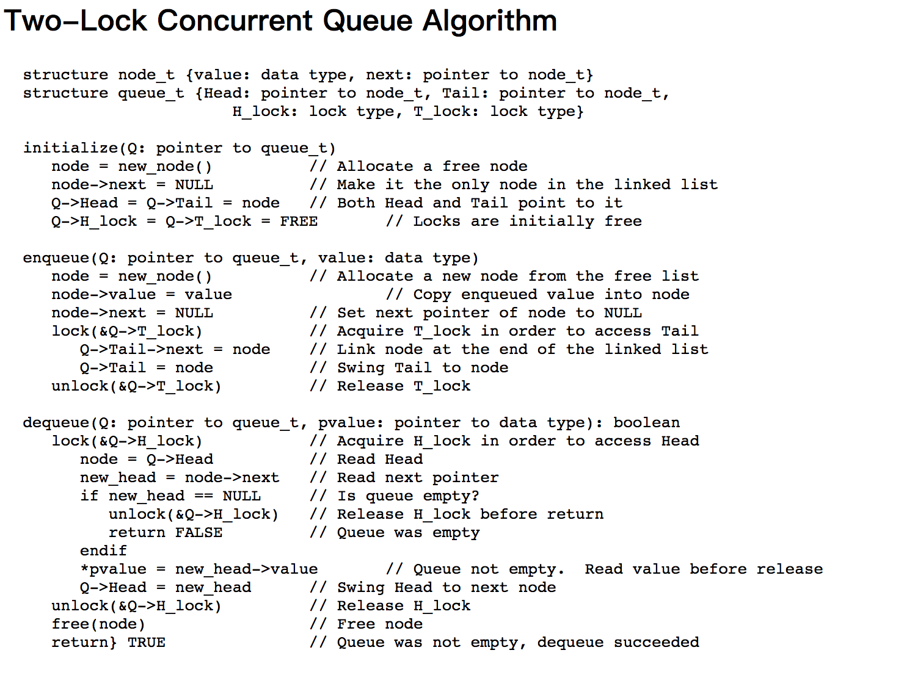
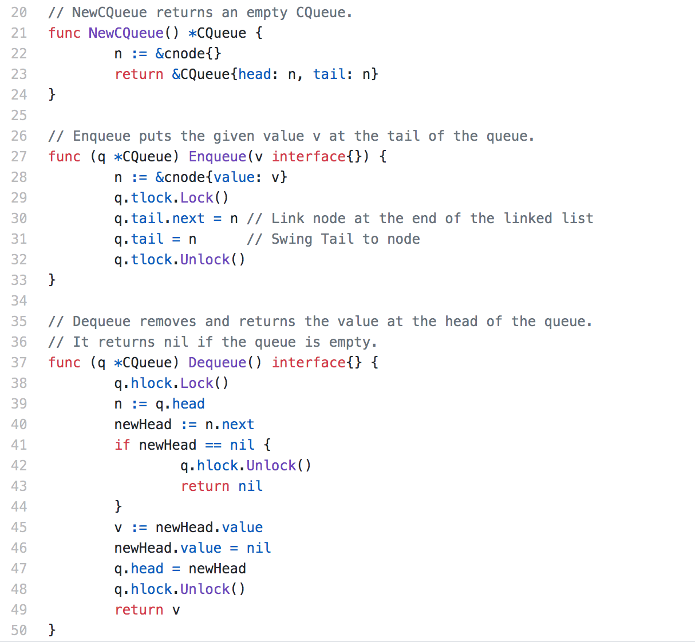

最近写了一篇使用Go实现高效lock-free队列的文章,主要是根据Maged M. Michael 和 Michael L. Scott 的论文中提到的两个算法，其中一个算法是利用两个lock实现分别控制head、tail实现的队列，算法都超级简单，所以使用Go实现起来也是非常的容易。
最近一位网友提了一个issue,发现使用go race detector很容易就报data race错误。上述论文已经发表了24年了，可以说久经学术界和工程界同仁的考验，但是这位网友也提供了可以重现的测试显示有data race问题，这是怎么回事呢？
Maged M. Michael 和 Michael L. Scott的two-lock queue算法的伪代码如下：

它使用两把独立的锁，一把为head指针提供并发控制，一把为tail指针提供并发控制。head指针指向一个空的辅助节点，head->next才是队列的第一个数据。如果队列为空，出队操作返回NULL。
根据伪代码使用go语言也很容易实现:

网友的测试代码如下:
|
|
然后运行go run -race main.go。
我们知道，go race detector经常用来探测代码中对同一个变量的并发访问问题，也就是data race的情况。它非常的优秀，是我们检测并发问题的一个利器。它是在内存访问的插入指令，运行时对监控对内存的读写，一旦发现有不同的goroutine读写的时候，就会打印出警告信息(当然都是读访问就不会报警了)。所以它必须是在运行时才有可能被检测到，所以在编译的时候，或者代码没有被运行到，或者代码运行的时候碰巧没有并发访问的话，它也检测不了。
它是基于Thread Sanitizer Algorithm算法实现的。Google内部使用它探测出很多项目比如Chromium的很多的并发错误，也帮助探测出Go标准库中几十个并发的错误。
我们可以写一个简单的程序，看看加了race之后编译的代码有什么改动:
|
|
运行go tool compile -race -N -l -S race.go就生成汇编代码了:
|
|
可以看到编译的代码增加了很多runtime.racexxxxxx的调用，用来检测有没有并发读写的问题。(所以增加了race检测代码不要部署在线上，仅仅测试使用)。
显然go race detector不会欺骗我们，它实实在在发现了代码中同时有对一个内存地址进行读写的情况，那么是论文中的算法错了吗？也不是。
一句话，go race detector发现的race问题并不影响队列的逻辑和实现。虽然Go的issue和一些文章中指出只要go race detector测试出问题就是bug,但是也不尽然，万事都不是觉得的，只能说这些建议在绝大部分的场景下都是正确的。
比如计数器，无果没有锁的保护，可能在并发的情况下数值是不准确的，但是如果我们不需要一个精确的计数器，那么data race就可以忽略。
针对论文中介绍的two-lock queue,它的辅助header节点的设计，读写各自的并发控制，以及队列的特点决定了我们可以忽略这个data race报警。
算法中enqueue()仅仅维护tail指针、dequeue()仅仅维护head指针，他们可以使用独立的lock来控制。
head节点是一个辅助节点(dummy node)，队列初始化的时候head指针和tail指针都指向它。当增加第一个元素的时候，enqueue()写入到它的next节点，而dequeue()尝试读取head->next节点。
如果head.next为空，那么我们就认为这个队列就是空的，至少在判断的这一刻队列就是空的，返回nil。
注意enqueue()是预先创建和初始化好新节点，才把它设置到tail->next,读写指针都是原子的，所以dequeue()要么看到了这个新的节点，要么没看到这个新的节点，它绝不会看到初始化一半的节点，所以并发的情况有以下两种情况:
enqueue()在tail->next位置上写入了新节点，dequeue()在head->next位置上碰巧看到了这个新节点，把它返回了dequeue()先读取了head->next然后enqueue()在tail->next同样的位置写入了新节点，这个时候dequeue()返回队列为空。这是合理的，因为出队操作是在新节点加入之前运行的。
虽然在这两种情况下会有data race的问题，但是不影响算法的正确性，也不影响队列的逻辑，所以这个data race报警是可以忽略的。
参考文档
- https://www.cs.rochester.edu/u/scott/papers/1996_PODC_queues.pdf
- https://www.cs.rochester.edu/research/synchronization/pseudocode/queues.html
- https://stackoverflow.com/questions/37369031/two-lock-concurrent-queue-algorithm-issue
- https://blog.golang.org/race-detector
- https://github.com/google/sanitizers/wiki/ThreadSanitizerAlgorithm
- https://github.com/golang/go/issues/13096